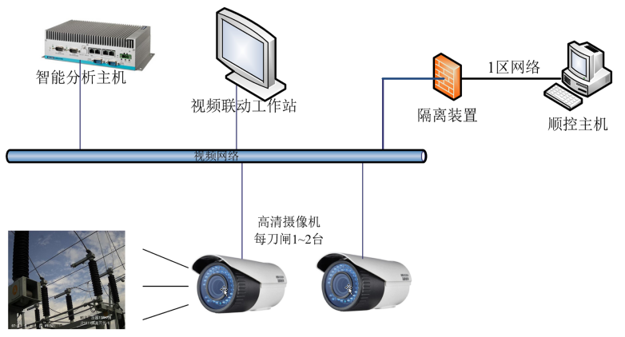
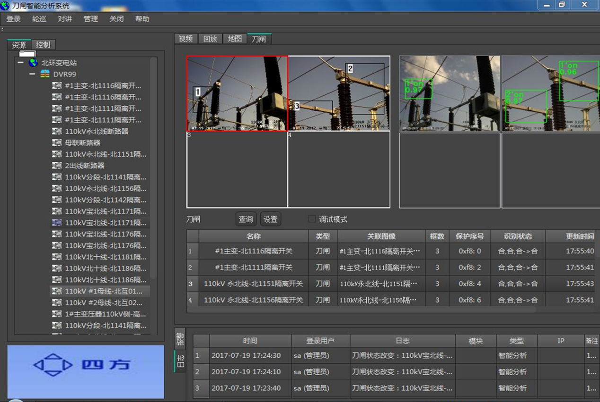

电力人工智能是能将人工智能的相关理论和方法与电力行业应用相融合的新兴领域，在电网建设和运维业务中引入人工智能技术手段，达到传统方法无法实现的应用成效。
基于图像智能分析的设备状态识别系统，采用非接触的安装和采集方式，在不影响现有系统正常运行的情况下部署，适合电力业务的应用场景。国家电网和南方电网都在积极投入进行相关研究与实验。通过摄像机实时采集设备图像，进行图像分析和目标状态智能识别，可用于一键顺控刀闸状态双确认、电力自动巡检等高级应用。
四方公司在此方向进行了探索，结合机器学习、图像识别等技术，在智能变电站高级应用中，实现了基于图像智能分析的刀闸、压板等设备状态识别功能。2018年在湖北随州供电公司试点，在国网范围内首次实现一键顺控双确认视频分析应用，得到用户的好评，产品获得湖北省电力公司“青创赛”一等奖。目前系统的识别准确率处于行业领先水平，并率先实现了智能分析、61850上送、图像联动等完整一键顺控双确认配套应用。
基于图像智能分析的设备状态识别采用了深度学习和图像识别技术相结合的方式，结合视频系统采集的图像，进行防抖动处理，输入到智能分析系统中进行识别，识别结果与SCADA监控系统的状态进行闭环，完成一键顺控刀闸双确认的交互流程。
深度学习技术采用基于Caffe和Darknet等高性能深度学习库，对同类样本进行标记和训练，训练后形成辨识模型，在应用现场通过调优的辨识模型对样本进行目标状态计算。经测试，采用深度学习技术对同类刀闸的目标状态识别正确率达97%以上。
图像识别技术采用openCV和matlab等成熟的图像处理框架，对缺乏训练样本的场景，提取样本图像的特征分量，并与采集图像进行特征比对，实现目标状态的识别。
视频系统摄像头抖动和位移是实际应用中识别效果影响较大的因素，为此在两种模式处理之前采用了图像防抖动算法，可处理横向15%位移，纵向10%位移，实际应用效果良好。
图像智能分析主机与视频系统部署在变电站安全III区，采集站端布置的高清摄像头视频，经过智能分析主机处理和状态检测，将识别状态通过隔离装置发送到安全I区，供一键顺控主机做刀闸状态双确认的辅助判据。

图像智能分析软件系统集成了视频设备管理、图像预览、识别区域标注、SCADA标识管理、视频采集、图像智能分析算法库、SCADA系统通信等模块。
其中，图像智能分析模块实现了对目标的检测区域、状态、可信度的处理和展示。
